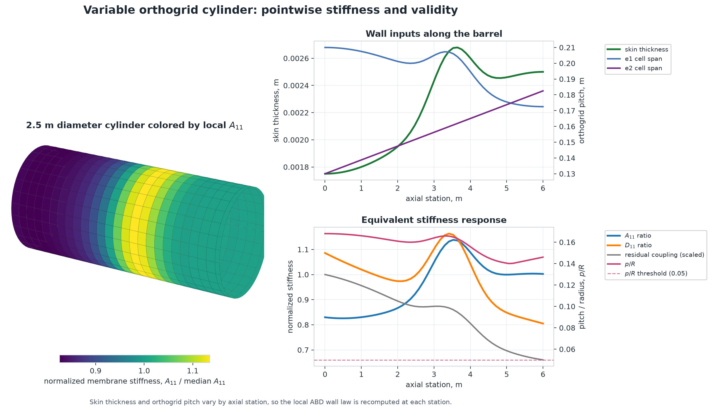
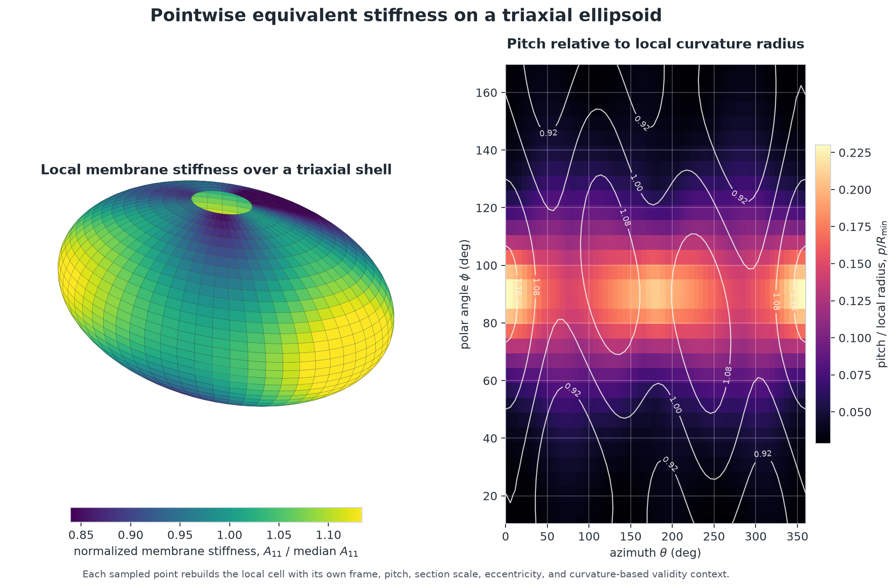

Stiffness Field Maps
Plot the design inputs alongside the calculated stiffness to see how a changing construction affects a shell. These SI examples use aluminum skins and geometry-derived hat and blade sections. Each surface point supplies local axes and curvature for a freshly built cell.
Variable Orthogrid Cylinder
The cylinder has a 2.5 m diameter, a 6 m length, and 25 mm rib webs. Skin thickness and both repeat dimensions vary by axial station. A smooth reinforcement band also increases the rib stiffness products and mass per length by a specified factor. That factor is an input to this illustrative property study.

The surface color shows A11 / median(A11). The station plots connect that
response to skin thickness and rib spacing. D11 changes more strongly because
material farther from the reference surface contributes through its squared
offset. Residual coupling is scaled by its maximum for this plot; p/R uses the
separate right-hand axis.
Varying Ellipsoid
The ellipsoid's semi-axes are 4.5 m, 3.125 m, and 1.875 m. Its cell factory varies skin thickness, rib spacing, orientation, and section multipliers with location.

The left view shows the stiffness pattern on the surface. The right view shows
pitch divided by local minimum radius, with A11 contours for comparison.
The local orthonormal frame defines each rib angle; the spacings are physical
lengths specified by the factory.
Rebuild the Figures
The complete generator defines the materials, sections, fields, sampling grids, and plot styles:
uv run python docs/examples/scripts/stiffness_field_maps.py
It writes both images under docs/assets/examples/. The documentation tests
execute these same field and rendering functions. Start with the shorter
cylinder and atlas script to adapt the workflow.
Why This Is Useful
A map lets you inspect where construction changes increase stiffness, how the response varies by direction, and where the selected pitch is large relative to curvature. Keep those views together with the design inputs when comparing alternative layouts.